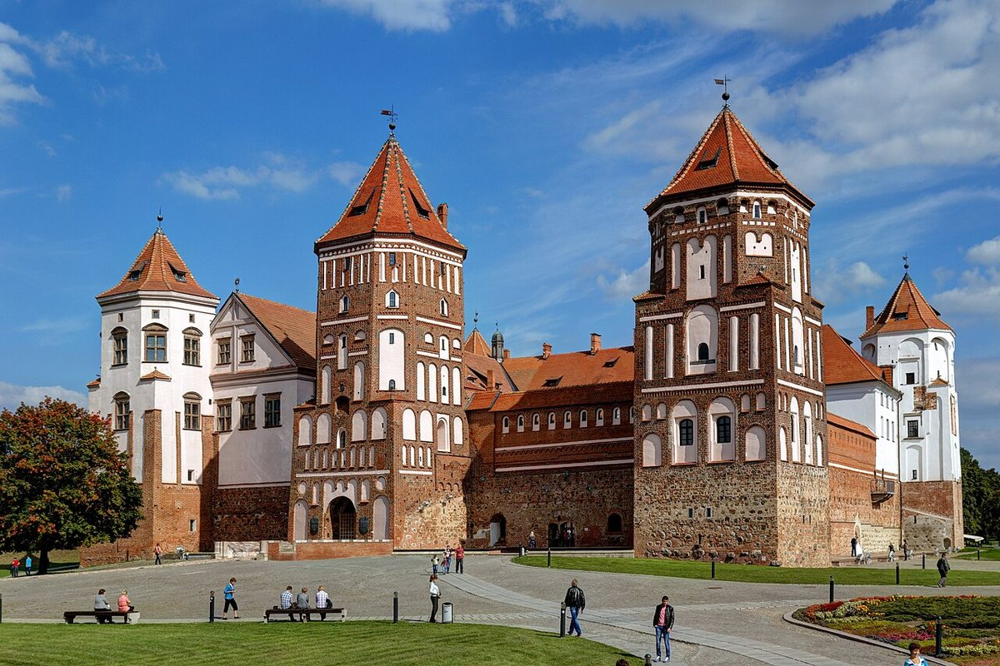
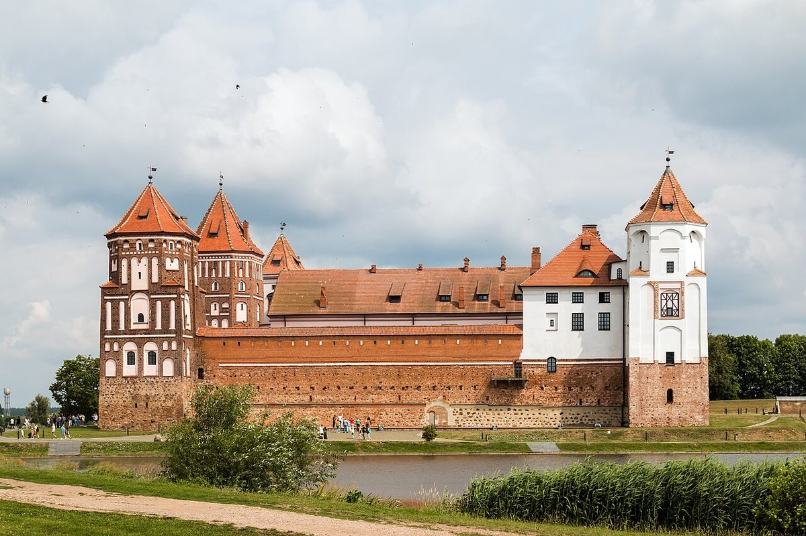
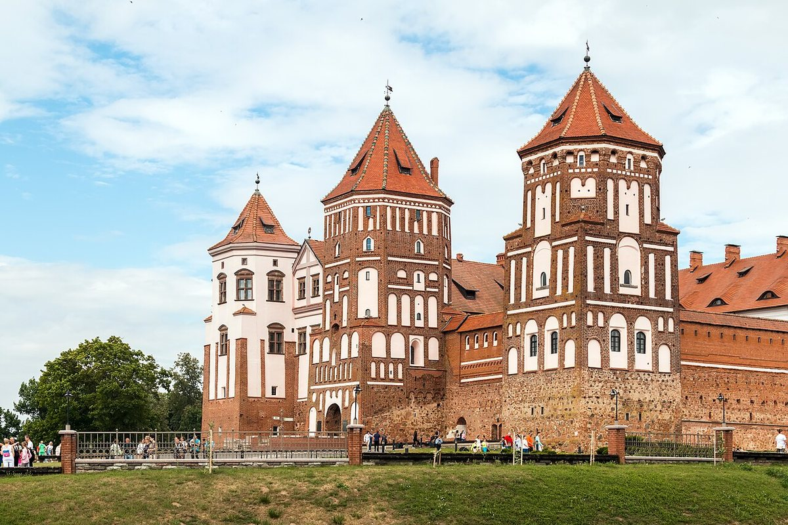

A 16th-century castle combining Gothic and Renaissance features. It is a UNESCO World Heritage Site.
Mir is first mentioned in 1434. Construction of the castle began in the 1520s under Yuri Ilyinich; it was the first private stone castle in the Grand Duchy of Lithuania.
In the late 16th century, under Mikalai Kryshtaf Radziwill “the Orphan”, the castle was rebuilt as a Renaissance residence: a three-storey palace, new ceilings and towers appeared, and ramparts and ponds were created around it.
The castle survived wars and destruction but retained its layout and volume. It was restored in the 20th century, and in 2000 the complex was inscribed on the UNESCO World Heritage List.
Today the castle houses a museum. The complex includes the palace, towers, defensive ramparts, a landscape park, a pond and the Swiatopolk-Mirski family chapel-tomb.


